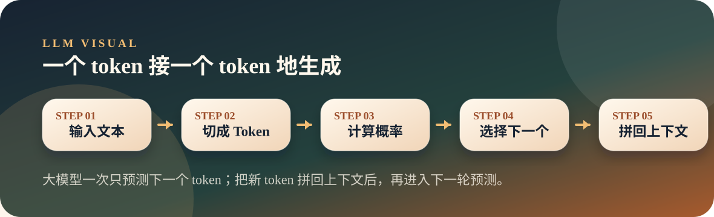

从零开始理解大模型
01. 一切从“猜下一个词”开始
大模型不是一次性写完整答案，而是在每一步预测下一个 token，连续很多步后形成完整回复。
Next TokenProbabilityTemperature
Thesis
文章主旨
大模型不是一次性写完整答案，而是在每一步预测下一个 token，连续很多步后形成完整回复。
当你输入“Thank you very”时，模型不会去数据库里查标准答案，而是在词表里给所有可能的下一个 token 排概率，然后选出一个继续往后写。
Visual
图解主线

把大模型想成一个特别强的输入法：它每次只猜下一个 token，但猜得足够准、连续猜很多次，就像是在回答问题。
Explain
概念展开
这一页先把文章里的关键判断讲顺，再用一个小观察帮助落地。
- 大模型的基本动作是预测下一个 token。
- 概率最高不等于唯一答案，采样策略会影响输出风格。
- 看懂这一讲，后面的 Token、Embedding、Attention 都是在解释“它怎么猜得更准”。
- “智能感”来自大量连续的小预测，而不是一次神秘的完整推理。
- 概率分布越集中，模型越确定；概率分布越分散，输出越容易变化。
- Temperature 不是让模型更聪明，而是改变选择 token 时的随机程度。
Small Check
可选小实验
用概率表观察模型如何预测下一个 token。 实验只用于观察现象，不作为本页主线。
可选实验命令
python3 llm/01-next-token/predict.py "Thank you very"predict.py会打印输入被切成哪些 token，以及下一个 token 的 Top 10 概率。- Top 10 概率能说明：模型不是查唯一答案，而是在多个可能里选择。
- 这一个小动作连续发生很多次，最后才形成完整回复。
Map
前后关系
这一页不是孤立知识点，它在整条大模型主线里承担一个具体位置。
- 这是 LLM 序列的起点：先理解模型最小动作，再看后面的结构如何服务这个动作。
- 下一页「Token」会沿着这条线继续展开，避免把单个概念孤立记忆。
- 本页只抓一个关键词：Next Token Prediction。现场讲解时先讲文章结论，再用图示解释为什么。
Boundary
易混点
- 不要把“预测下一个 token”误解成简单背诵，它背后已经包含上下文计算。
- 不要把 Temperature 当成准确率开关，高温通常只是更发散。
- 一次输出看起来像一句话，底层却是一连串 token 选择。
Extend
继续阅读
教学页以讲清文章为主；完整原文与配套脚本保留在仓库中，方便分享后继续查阅。